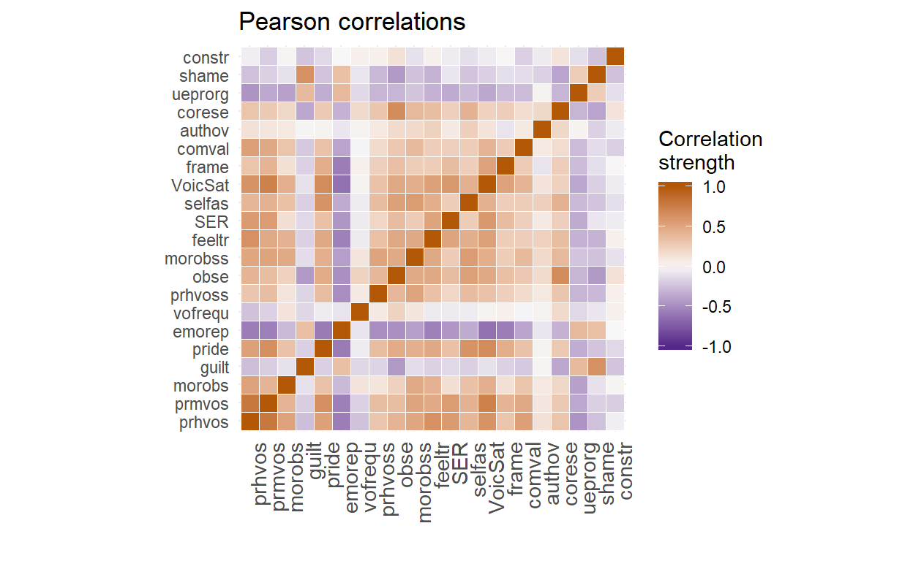
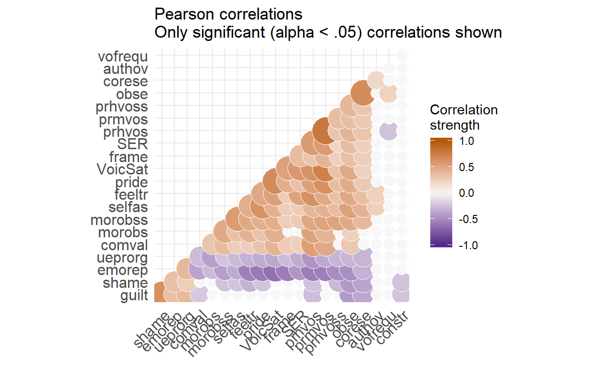
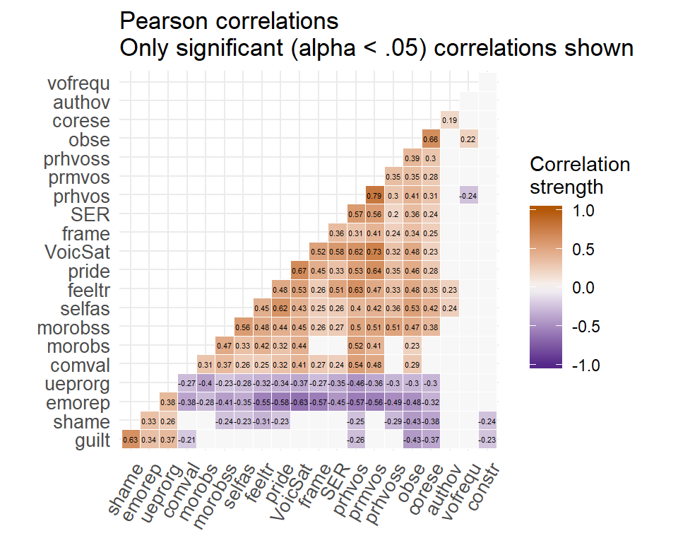
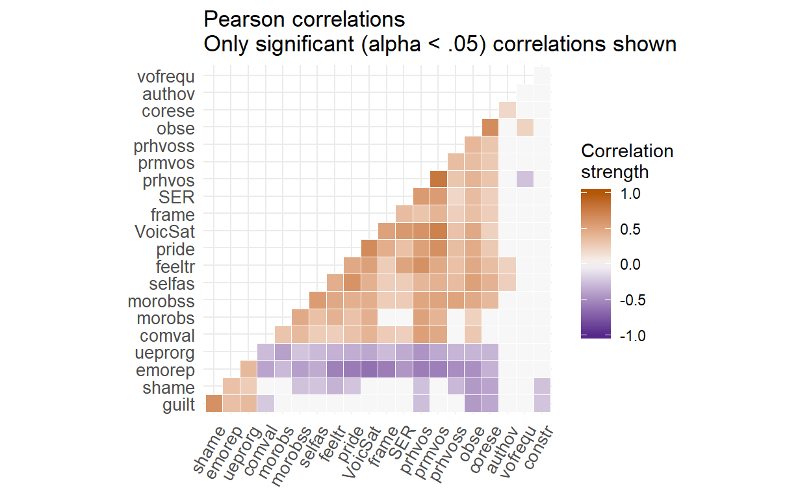

Correlation matrices are ubiquitous when dealing with survey data. However, most of them are very simple because they display all correlations without distinctions and do not use any highlighting features. Therefore, my aim is here to create a fun correlation table that makes it easier for researchers who are interested in the data set to identify interesting correlations that are not discussed in the results section of a paper.
First, I need to compute the correlations
cormat <- round(cor(data), 2)Let’s start with one of those aweful boring correlation matrices as I see them in academic journals all the time.
cormat %>%
reactable::reactable(
pagination = FALSE
)Aweful, right?
I want to add some color to show if a correlation is positive or negative, and I want to maybe denote the strength of correlations. First, I use geom_tile to do it within ggplot.
cormat_long <- reshape2::melt(cormat)
ggplot(data = cormat_long, aes(Var2, Var1, fill = value))+
geom_tile(color = "white") +
scale_fill_gradient2(low = "#542788", high = "#b35806", mid = "#f7f7f7",
midpoint = 0, limit = c(-1, 1), space = "Lab",
name="Correlation\nstrength") +
theme_minimal()+
theme(axis.text.x = element_text(angle = 90, vjust = 1, size = 11, hjust = 1)) +
coord_fixed() +
labs(x = "",
y = "",
title = "Pearson correlations")
This is a good start! The color makes it much better. However, I don’t like that it displays irrelevant and redundant information. It shows all correlations, including those that are insignificant, and the full table, i.e. upper and lower triangle.
The ggcorrplot package has some functions to take care of those issues easily.
cormat_pearson <- Hmisc::rcorr(as.matrix(data), type = "pearson")
p.mat <- cormat_pearson$P
ggcorrplot(cormat, method = "circle",
type = "lower",
title = "Pearson correlations\nOnly significant (alpha < .05) correlations shown",
hc.order = TRUE,
outline.col = "white",
p.mat = p.mat,
sig.level = 0.05,
insig = "blank") +
scale_fill_gradient2(low = "#542788", high = "#b35806", mid = "#f7f7f7",
midpoint = 0, limit = c(-1, 1), space = "Lab",
name = "Correlation\nstrength")
The circles denote the strength, which I kind of like, but when knitting it to html it looks terrible and the proportions are out of hand. Also, color is already denoting direction and strength. Maybe it would be easier to just show the numbers for the correlations, instead of conveying that information differently and making the plot to busy.
ggcorrplot(cormat, method = "square",
type = "lower",
lab = TRUE,
lab_size = 1.5,
title = "Pearson correlations\nOnly significant (alpha < .05) correlations shown",
hc.order = TRUE,
outline.col = "white",
p.mat = p.mat,
sig.level = 0.05,
insig = "blank",
tl.srt = 60, #I did not like the default 45 degree rotation
tl.cex = 10) +
scale_fill_gradient2(low = "#542788", high = "#b35806", mid = "#f7f7f7",
midpoint = 0, limit = c(-1, 1), space = "Lab",
name = "Correlation\nstrength")
I am not sure that having the numeric correlation values displayed is such a good idea. Hence, for my last plot I omitted those values again:
ggcorrplot(cormat, method = "square",
type = "lower",
title = "Pearson correlations\nOnly significant (alpha < .05) correlations shown",
hc.order = TRUE,
outline.col = "white",
p.mat = p.mat,
sig.level = 0.05,
insig = "blank",
tl.srt = 60, #I did not like the default 45 degree rotation
tl.cex = 10) +
scale_fill_gradient2(low = "#542788", high = "#b35806", mid = "#f7f7f7",
midpoint = 0, limit = c(-1, 1), space = "Lab",
name = "Correlation\nstrength")
For attribution, please cite this work as
Pychlau (2020, March 16). Final Project Blog: Correlation matrices. Retrieved from https://spychlau.github.io/Final_project_blog/posts/2020-03-16-correlation-matrices/
BibTeX citation
@misc{pychlau2020correlation,
author = {Pychlau, Sophie},
title = {Final Project Blog: Correlation matrices},
url = {https://spychlau.github.io/Final_project_blog/posts/2020-03-16-correlation-matrices/},
year = {2020}
}